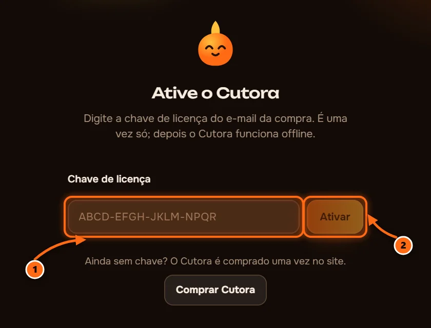
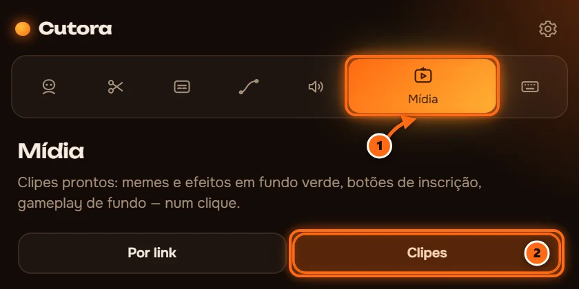

Instalar o Cutora
Seis passos curtos, uns cinco minutos. Você precisa do e-mail que recebeu após o pagamento.
Abra o e-mail do Cutora
Ele tem o link de download e sua chave de licença. Guarde a chave, você vai precisar dela no passo 5.

Feche o Premiere Pro
O instalador adiciona o Cutora ao Premiere, então o Premiere precisa estar fechado enquanto ele roda.
Rode o instalador
Abra o arquivo baixado e siga os passos. Tudo o que o Cutora precisa está dentro: o painel, o reconhecimento de fala e as ferramentas de vídeo. O instalador está em inglês: aceite o contrato («I accept the agreement») e clique em Next e Install.

Digite sua chave
Cole a chave do e-mail e aperte Ativar. Precisa de internet uma vez. Depois o Cutora funciona offline.

Baixe o pack de clipes
Opcional. Clipes de tela verde e gameplay, cerca de 1,7 GB. Abra Mídia, depois Clipes, e aperte Baixar. Dá para fazer quando quiser.

Requisitos: Windows 10 ou 11, Adobe Premiere Pro 2022 ou mais recente.
Se algo der errado
O Cutora não aparece em Janela, Extensões
Reinicie o Premiere Pro depois de instalar. Se ainda não aparecer, rode o instalador de novo e confira se o seu Premiere Pro é 2022 ou mais recente.
O Windows diz «O Windows protegeu o computador»
Clique em Mais informações e depois em Executar assim mesmo. O Windows mostra isso para apps novos que ainda viu poucas vezes.
A chave já está em uso em dois computadores
Escreva para o suporte a partir do e-mail com que você pagou, e liberamos um lugar para o computador novo.
Meu Premiere Pro está em outro idioma
Os nomes do menu são traduzidos, em português são Janela, Extensões. O Cutora segue o idioma do Premiere, e você pode mudar nas configurações do Cutora.
Como removo o Cutora?
Abra as Configurações do Windows, depois Aplicativos, encontre o Cutora e clique em Desinstalar.